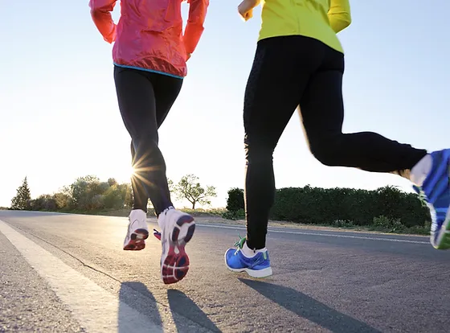

My Hobbies
-
Drawing
Art allows self-reflection, to express your creativity, and to express thoughts and feelings for which words are not enough. Drawing and painting are great hobbies to give you a break from everyday life
-
Practicing Martial Arts

Is martial art healthy?
Martial arts offers an opportunity to not only enhance your physical health but your mental health, too. Stress relief. Martial arts can help reduce stress and anxiety by encouraging you to practice deep breathing, meditation, and mindfulness
-
Jogging

Even a little physical activity, when incorporated in our routine regularly, can have a significant impact on our lives. Running is often cited as one of the easiest ways to go about being more active in our daily lives. However, contrary to popular belief, this doesn't merely apply to those who are looking to lose weight or train for marathons. It can prove to be wondrous for all aspects of your health. Some of the benefits you can hope to achieve include- improved cardiovascular health, increased lung capacity, toned legs and a runner's high, thanks to the release of endorphins